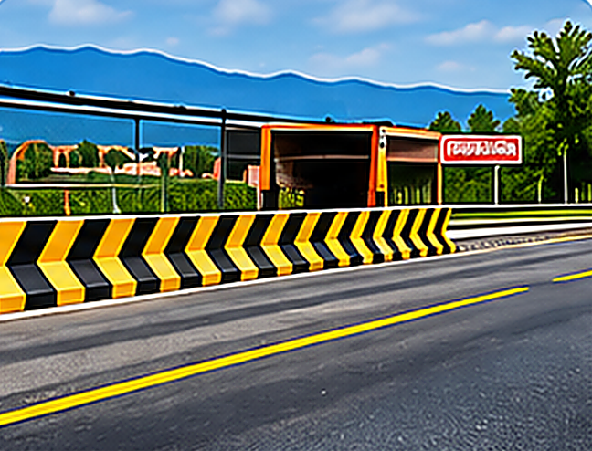

01
Road Marking (Line Marking)
White and yellow road lines, lane marking, directional arrows, stop lines and parking markings.
Complete Road Marking & Safety Solutions.
Explore our road marking and road safety services.
White and yellow road lines, lane marking, directional arrows, stop lines and parking markings.

Thermoplastic road lines, zebra crossings and traffic symbols for road and pavement marking requirements.

Reflective road studs and pavement markers designed to improve road visibility and guidance.
Road sign boards, regulatory signs, warning signs and directional traffic signs.

Roadside safety barriers and crash barriers for road and infrastructure projects.
Traffic cones and other road safety accessories for work zones and traffic management.